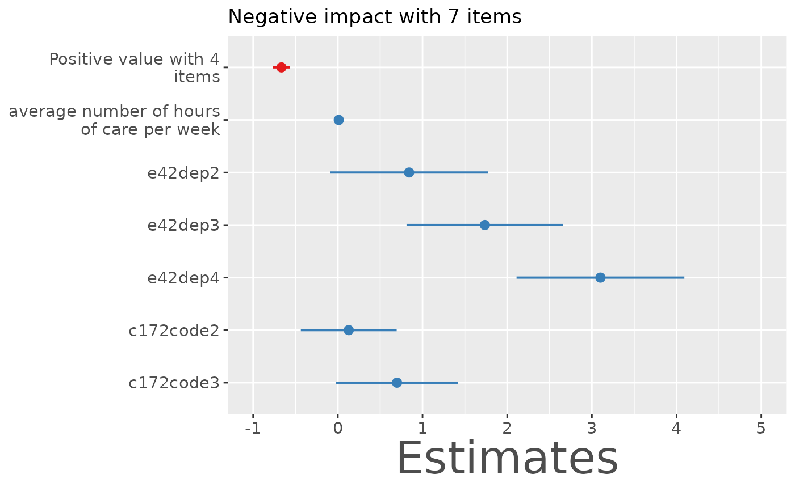
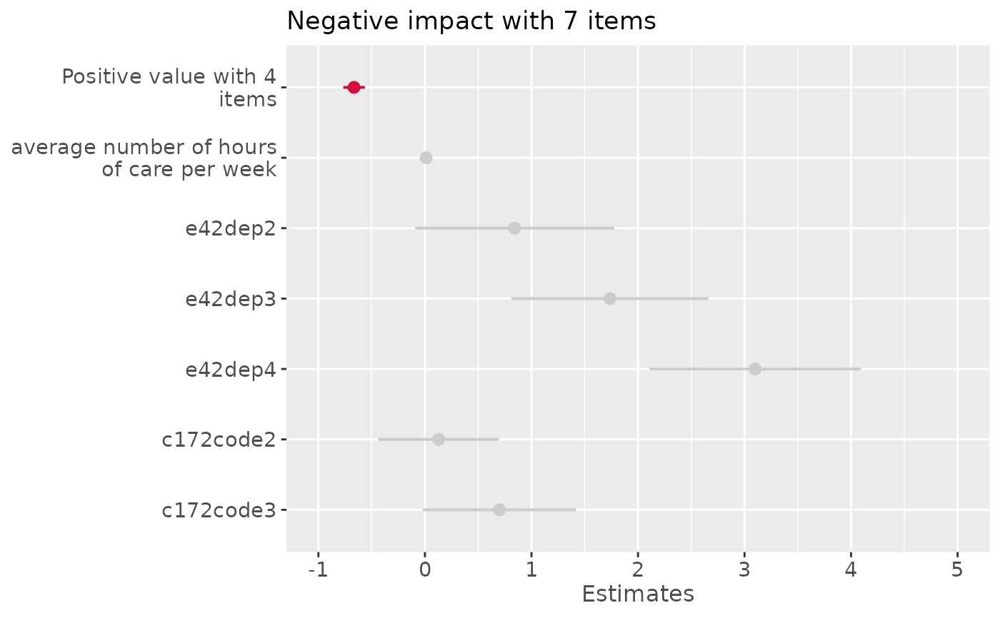
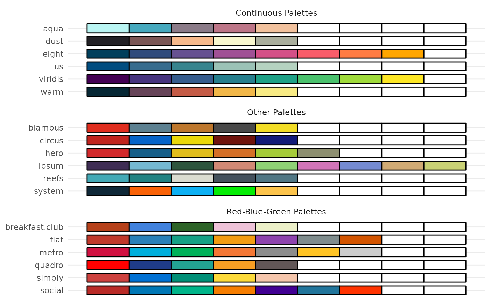

Set default plot themes, use pre-defined color scales or modify plot or table appearance.
theme_sjplot(base_size = 12, base_family = "")
theme_sjplot2(base_size = 12, base_family = "")
theme_blank(base_size = 12, base_family = "")
theme_538(base_size = 12, base_family = "")
font_size(
title,
axis_title.x,
axis_title.y,
labels.x,
labels.y,
offset.x,
offset.y,
base.theme
)
label_angle(angle.x, angle.y, base.theme)
legend_style(inside, pos, justify, base.theme)
scale_color_sjplot(palette = "metro", discrete = TRUE, reverse = FALSE, ...)
scale_fill_sjplot(palette = "metro", discrete = TRUE, reverse = FALSE, ...)
sjplot_pal(palette = "metro", n = NULL)
show_sjplot_pals()
css_theme(css.theme = "regression")Base font size.
Base font family.
Font size for plot titles.
Font size for x-axis titles.
Font size for y-axis titles.
Font size for x-axis labels.
Font size for y-axis labels.
Offset for x-axis titles.
Offset for y-axis titles.
Optional ggplot-theme-object, which is needed in case multiple
functions should be combined, e.g. theme_sjplot() + label_angle().
In such cases, use label_angle(base.theme = theme_sjplot()).
Angle for x-axis labels.
Angle for y-axis labels.
Logical, use TRUE to put legend inside the plotting area.
See also pos.
Position of the legend, if a legend is drawn.
Use "bottom", "top", "left" or "right"
to position the legend above, below, on the left or right side
of the diagram.
If inside = TRUE, legend can be placed inside
plot. Use "top left", "top right", "bottom left"
and "bottom right" to position legend in any of these corners,
or a two-element numeric vector with values from 0-1. See also
inside.
Justification of legend, relative to its position ("center" or
two-element numeric vector with values from 0-1.
Character name of color palette.
Logical, if TRUE, a discrete colour palette is returned.
Else, a gradient palette is returned, where colours of the requested palette
are interpolated using colorRampPalette.
Logical, if TRUE, order of returned colours is reversed.
Further arguments passed down to ggplot's scale()-functions.
Numeric, number of colors to be returned. By default, the complete colour palette is returned.
Name of the CSS pre-set theme-style. Can be used for table-functions.
When using the colors argument in function calls (e.g.
plot_model()) or when calling one of the predefined scale-functions
(e.g. scale_color_sjplot()), there are pre-defined colour palettes
in this package. Use show_sjplot_pals() to show all available
colour palettes.
# prepare data
library(sjmisc)
data(efc)
efc <- to_factor(efc, c161sex, e42dep, c172code)
m <- lm(neg_c_7 ~ pos_v_4 + c12hour + e42dep + c172code, data = efc)
# create plot-object
p <- plot_model(m)
# change theme
p + theme_sjplot()

# change font-size
p + font_size(axis_title.x = 30)

# apply color theme
p + scale_color_sjplot()
#> Scale for 'colour' is already present. Adding another scale for 'colour',
#> which will replace the existing scale.

# show all available colour palettes
show_sjplot_pals()

# get colour values from specific palette
sjplot_pal(pal = "breakfast club")
#> [1] "#b6411a" "#4182dd" "#2d6328" "#eec3d8" "#ecf0c8"